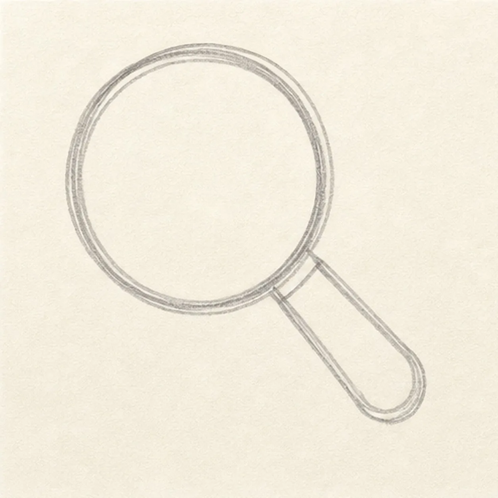
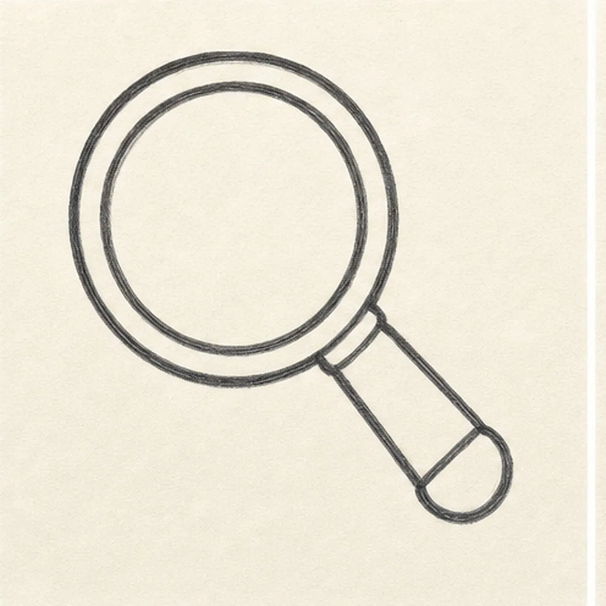
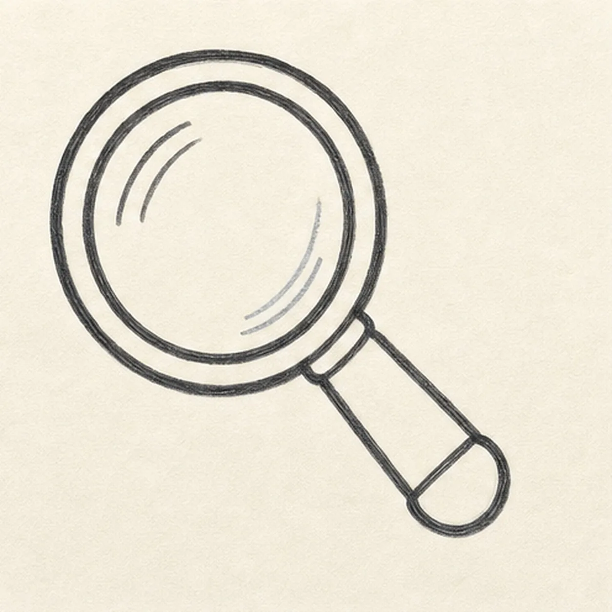
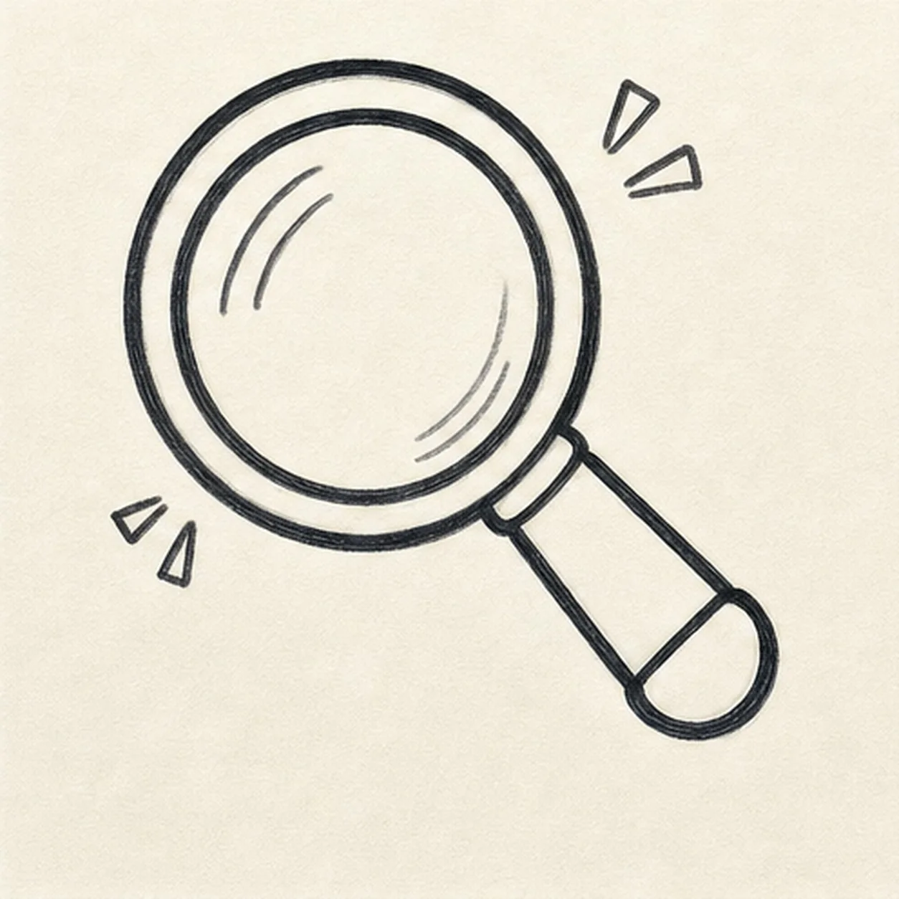
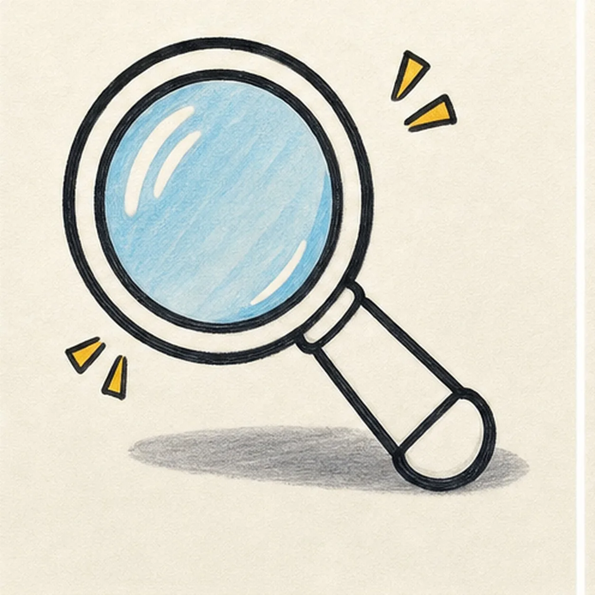

Felt-tip marker mode
Let's draw a cartoon magnifying glass
Treat this as one playful practice round: sketch the idea loosely, simplify the shapes, then commit with confident marker outlines and bright fills.
-
01

Block lens and handle
Draw a large round lens, then attach a short diagonal handle to one side.
Doodle tip: Make the lens much bigger than the handle. That size difference makes it read quickly.
-
02

Thicken the rim
Add a bold ring around the lens and round off the handle end.
Doodle tip: Keep the rim even enough to see the glass, but do not worry about a perfect circle.
-
03

Add glass shine
Place a few curved shine streaks inside the lens, following the round glass shape.
Doodle tip: Put the shine inside the lens you already drew. It should not create a new lens outline.
-
04

Spark the search
Add tiny search spark marks near the lens, then start making the keeper outlines bolder.
Doodle tip: Use just a few spark marks. Too many will pull attention away from the magnifying glass.
-
05

Color the glass
Fill the lens pale blue, color the handle yellow, and add a small gray ground shadow.
Doodle tip: Let some marker streaks show in the blue. That keeps the glass playful instead of glossy.
-
06

Polish the magnifier
Thicken the black outlines, even the marker fills, clarify the shine streaks and spark marks, and strengthen the same shadow.
Doodle tip: Stop before adding words, faces, or a border. The lens, handle, shine, and color do enough.